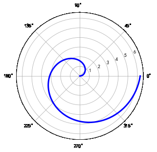
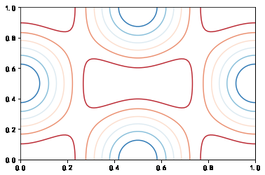

使用 Matplotlib 绘制 2D 和 3D 图形
实验介绍

在使用机器学习方法解决问题的过程中，一定会遇到需要针对数据进行绘图的场景。Matplotlib 是支持 Python 语言的开源绘图库，因为其支持丰富的绘图类型、简单的绘图方式以及完善的接口文档，深受 Python 工程师、科研学者、数据工程师等各类人士的喜欢。Matplotlib 拥有着十分活跃的社区以及稳定的版本迭代，当我们在学习机器学习的课程时，掌握 Matplotlib 的使用无疑是最重要的准备工作之一。本次实验课程中，我们将学会使用 Matplotlib 绘制 2D 和 3D 图形的方法和技巧。
实验知识点
本次实验涉及的知识点主要有：
- 兼容 MATLAB 代码风格 API
- 图名称、坐标轴名称、图例
- 线型、颜色、透明度
- 画布网格、坐标轴范围
- 其他 2D 图形
- 3D 图形
实验环境
- Python 3.6
- Matplotlab: 2.2.2
索引目录
在使用 Notebook 环境绘图时，需要先运行 %matplotlib inline 命令。这条命令的作用是将 matplotlib 绘制的图形嵌入在当前页面中。
1 | %matplotlib inline |
1. 兼容 MATLAB 代码风格 API
相信很多学理工科的同学都使用过 MATLAB，它是一种用于算法开发、数据可视化、数据分析以及数值计算的高级技术计算语言和交互式环境。而在 Matplotlib 中，也提供了和 MATLAB 相似的 API。对于使用过 MATLAB 的同学而言，这将是入门 Matplotlib 最快的方式。
1 | """使用 matplotlib 提供的兼容 MATLAB API，需要导入 pylab 模块 |

如果我们要绘制子图，就可以使用subplot方法
1 | """绘制子图 |
使用兼容 MATLAB 风格的 API 的好处在于，如果熟悉 MATLAB，那么将很快上手使用 Python 绘图。不过，除了一些简单的图形之外，并不鼓励使用兼容MATLAB 的 API。
于此同时，实验更加建议学习和使用 Matplotlib 提供的面向对象 API，它更加强大和好用。
2. Matplotlib 面向对象 API（推荐）
1 | """使用 matplotlib 提供的面向对象 API，需要导入 pyplot 模块，并约定简称为 plt |
1 | """方法 1：绘制上方一致的图形 |

重点：上面的绘图代码中，你可能会对 figure 和 axes 产生疑问。Matplotlib 的 API 设计的非常符合常理，在这里，figure 相当于绘画用的画板，而 axes 则相当于铺在画板上的画布。我们将图像绘制在画布上，于是就有了 plot，set_xlabel 等操作。

1 | """同样，我们可以绘制子图 |

1 | """还能将一张图绘制在另一张图的内部 |
Tips：上面的绘图代码中，你可能学会了使用 add_axes() 方法向我们设置的画板 figure 中添加画布 axes。在 Matplotlib 中，还有一种添加画布的方式，那就是plt.subplots()，它和 axes 都等同于画布。
1 | """方法 2：使用 plt.subplots() 添加画布 |

Matplotlib 绘图非常灵活，我们还可以使用 add_subplot 添加画布，使用 plt 完成绘图。
1 | """方法 3：使用 add_subplot() 添加画布 |
对于上面提到的 3 种添加画布的方法，你可能觉得有些杂乱。一般情况下，只需要熟悉其中的一种即可，这里比较推荐使用 plt.subplots()，而下面的许多例子也将采用这种方式展开。
另外，既然我们拥有了画板和画布，我们应该也可以调整二者的尺寸，形状吧？当然！
1 | """调节画布尺寸和显示精度 |

2.1 图名称、坐标轴名称、图例
1 | """设置图标题 |
举例如下：
1 | """绘制包含图标题、坐标轴标题以及图例的图形 |

图例中的 loc 参数标记图例位置，1，2，3，4 依次代表：右上角、左上角、左下角，右下角；0 代表自适应。
2.2 线型、颜色、透明度
在 Matplotlib 中，你可以设置线的颜色、透明度等其他属性。
1 | """设置线的颜色、透明度 |
而对于线型而言，除了实线、虚线之外，还有很多丰富的线型可供选择。
1 | """设置线型 |
2.3 画布网格、坐标轴范围
有些时候，我们可能需要显示画布网格或调整坐标轴范围。
1 | """设置画布网格和坐标轴范围 |
2.4 其他 2D 图形
除了线型图，Matplotlib 还支持绘制散点图、柱状图等其他常见图形。
1 | """绘制散点图、梯步图、条形图、面积图 |

1 | """绘制雷达图 |

1 | """绘制直方图 |

1 | # 生成示例数据 |

2.5 3D 图形
使用 Matplotlib 绘制 3D 图形的过程中，我们首先需要导入 Axes3D 类，并通过 projection='3d' 参数指定绘制 3D 图形。由于 3D 图形的绘制在机器学习中并不经常遇见，这里不做更多的介绍。
1 | """绘制 3D 表面图 |
Tips：当我们在桌面环境中绘制 3D 图形时，是可以通过鼠标任意拖动角度的，但在当前环境中不支持。
下面再绘制一个漂亮且复杂一些的 3D 图形。
1 | """绘制复杂一些的 3D 图 |

3. 实验总结
通过这节实验课程的学习，相信你已经初步掌握了使用 Matplotlib 绘图的方法和技巧。这些内容，在机器学习课程中已足够使用。当然，如果你对 Matplotlib 非常感兴趣，也可以通过实验楼其他课程学习 Matplotlib 的更多内容。本次实验涉及的知识点主要有：
- 兼容 MATLAB 代码风格 API
- 图名称、坐标轴名称、图例
- 线型、颜色、透明度
- 画布网格、坐标轴范围
- 其他 2D 图形
- 3D 图形